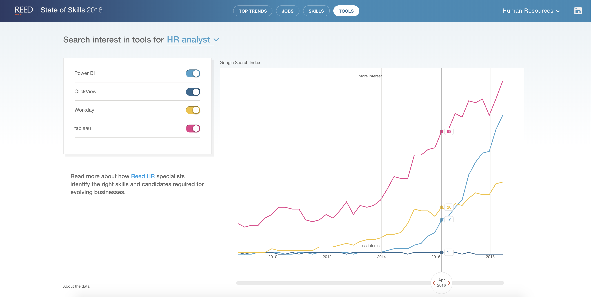

State of Skills
An interactive data visualization that revealed new insights on the most important skills for professionals in Reed's four recruitment sectors.
The Project
Reed Global wanted to produce a one-of-a-kind report on the most important skills in the workforce. In order to provide a unique take on what can be an over-reported topic, we produced an original data analysis and interactive platform that combines insights
from multiple different datasets.
AR infographic showing parts of plants that can be eaten, but are often thrown away.
Contribution
Using the Open Skills API from the O*NET database, I identified key job roles within Reed's four focus industries to analyse the data. I then took the top role names and skills for each job and pulled historical data from Google Trends to see how search
interest has changed over time. With this analysis complete, I worked closely with the design team to find the best solution for visualizing the data in a new and exciting way.

Each card was triggered by pointing a phone at a food photograph.